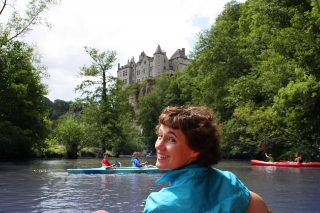
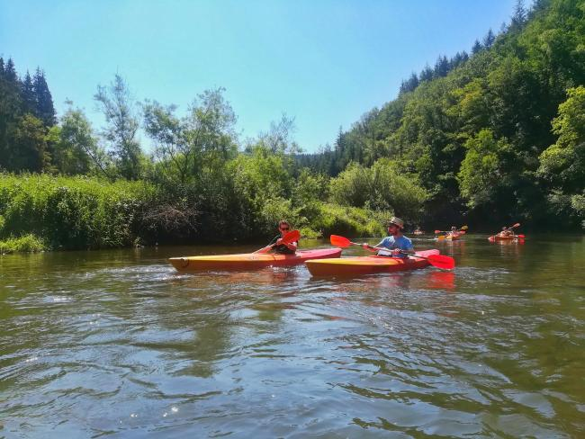

De klassieker
De Lesse
Langs kasteel Walzin en onder de rotsen door richting Dinant — de bekendste afvaart van het land.
De Ardennen vanaf het water: drie rivieren, elk met een eigen karakter — van een gezinsafvaart op de Lesse tot trage kilometers op de Semois.
Kies je rivier

Langs kasteel Walzin en onder de rotsen door richting Dinant — de bekendste afvaart van het land.

Rustiger water tussen Durbuy en Barvaux — instappen kan in het hart van de stadjes.

Diepe bochten door de zuidelijke heuvels — peddelen op het tempo van de rivier.
Praktisch
Het seizoen loopt grofweg van de lente tot de vroege herfst. De waterstand bepaalt of afvaarten doorgaan — check dat vooraf bij de verhuurder van je traject.
Op de rustigere trajecten van de Ourthe en de Lesse varen gezinnen volop mee; verhuurders geven zwemvesten en advies over het geschikte traject.
In de zomer en tijdens weekends is vooraf reserveren bij de verhuurder de veilige keuze.